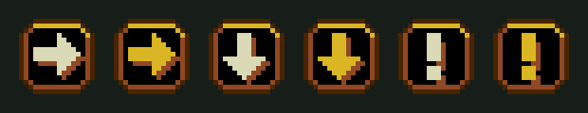

PLAGUEFALL / TRAVESSIA + ESCOLTA
Percursos mais longos.
Dois novos objetivos.
2.048 PIXELS · FASES 4 E 6B · MEGA DRIVE
As duas fases passaram de 1.024 para 2.048 pixels de largura. Os obstáculos, o avanço do combate e a câmera acompanham o percurso maior. A conclusão depende da chegada à saída sinalizada.
Baixar ROM validadaProposta aprovada
4 · Chegar ao ponto
Damião atravessa os túneis e contorna oito buracos. A seta indica a saída quando ela está fora da tela; um sinal pulsante e a marcação no chão identificam o destino.
Fique na área por 0,4 segundo para completar. Não há cota de mortes. Ondas duplas a cada dois segundos mantêm a pressão durante o avanço. O caminho segue para o sinalizador, na fase 5.
6B · Escoltar Dinorah
Dinorah contorna buracos e lava, faz duas pausas e dispara ocasionalmente. Se Damião se afasta, ela espera cobertura. Sua vida aparece no HUD e sobre a personagem.
Cheguem juntos e vivos. Se ela cair, a tentativa termina e você pode reiniciar a mesma fase. A retirada concluída segue para a fase 7.
PADRÃO VISUAL DO JOGO
Seta e exclamação no estilo da interface

As setas de direção e de chegada usam a mesma moldura da exclamação. O miolo alterna entre creme e âmbar; a placa mantém o contraste sobre o cenário. O HUD usa uma versão compacta da mesma seta.
Seta: siga até a saída. Exclamação: Dinorah está aguardando cobertura ou conferindo a passagem. Marcadores compartilhados para reutilização no jogo, sem caracteres soltos da fonte.
CAPTURAS DA ROM / EMULADOR
Como ficou no jogo
Percursos e situações de dano foram isolados para validar as regras. Movimento, obstáculos, disparos, câmera, pausa e resultados são executados pelo jogo. Os testes do percurso usam somente o controle após a preparação do cenário.
2.048 pixels, dentro do orçamento
Os mapas reutilizam os módulos e as paletas nativas. Cada trecho combina passagens, áreas abertas e buracos; o mapa de retirada também mantém as zonas de lava. A câmera carrega novas linhas e colunas à medida que os personagens avançam.
4 · Túneis de manutenção
6B · Retirada por terra
Arraste a barra horizontal para examinar as extremidades. As imagens são os mapas exportados para a ROM, sem os atores. A rota de Dinorah soma cerca de 2.350 pixels; a travessia sem combate leva aproximadamente 70 segundos com as pausas.
Verificação
| Parte | Resultado |
|---|
| Chegada | Travessia completa sem mortes; área sinalizada e confirmação de 0,4 s. |
| Escolta | Rota completa, pausas, espera por cobertura, tiros de apoio, dano, derrota e reinício. |
| Câmera e pausa | Rolagem além de 1.536 px e restauração do cenário e dos personagens. |
| Hardware | Paleta compartilhada; 24 tiles para Dinorah; mapas abaixo do teto de 640 tiles. |
| Carga do piloto | Quatro inimigos, dois personagens e projéteis. Medido em NTSC e PAL. |
A dificuldade ainda pode ser afinada com partidas humanas. Os percursos e os resultados já estão integrados à campanha.
Relatório NTSC · Relatório PAL · Recursos e validação